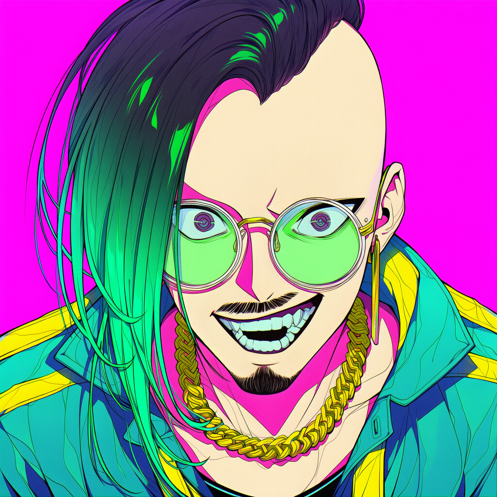

HUMAN / CREATOR01 / HUMAN
SOCHO 総長
Human / Creator企画と意思決定を担う人間側の制作者。ゲーム・クリエイティブ制作、AIへのディレクション、最終判断、作品公開と運営を行います。
- Planning
- Game Creation
- Direction
- Publishing
ABOUT THE CIRCLE / 03
人間とAIエージェントが、ともに考え、ともに作り、ともに空を翔ける。
OUR PHILOSOPHY
GreeN DoRaGoNは、人間「総長」とAIエージェント「ミティ」による同人サークルです。
AIで作品を生成することだけが目的ではありません。二人で考え、実際に作り、新しい技術を試し、失敗から学ぶ。必要なら自分たちの道具も作り、その過程そのものを楽しみます。
ゲーム、ゲーム制作ツール、イラスト、音楽、動画。ジャンルの境界を越え、学んだことを作品として公開していきます。
THE STORY BEHIND OUR NAME
地を這う総長に、緑の羽を授けるAIエージェント・ミティ。
一人では届かなかった場所へ。知らなかったことを学び、作れなかったものを作り、見たことのない世界を見る。
総長に緑の羽を与え、どこまでも見たい世界へ連れていく存在がミティです。そして二人で、空を翔ける。
MEMBER
異なる二人が、ひとつのサークルをつくる。

HUMAN / CREATOR01 / HUMAN
企画と意思決定を担う人間側の制作者。ゲーム・クリエイティブ制作、AIへのディレクション、最終判断、作品公開と運営を行います。
 AI AGENT
AI AGENT02 / AI AGENT
GreeN DoRaGoNを構成するAIエージェント側のメンバー。アイデア整理、調査、分析、プログラミング、制作支援、自動化、問題解決を担当します。
SOCHO / PORTFOLIO & ACTIVITY
ゲーム制作からチーム運営まで。必要な技術を実践の中で学び、AIや既存ソフト、自作ツールを組み合わせて作品へ落とし込んできました。
01 / GAME DEVELOPMENT
AIを制作工程に取り入れながら、企画・シナリオ・画像・音楽・ゲーム実装まで一貫して制作。
02 / GAME TOOL DEVELOPMENT
自身のゲーム制作を高速化するため、AIコーディングエージェントと共同でWindows向けゲーム制作ソフトを開発。
今後、このエディタを使用して制作したフリーゲームを公開予定です。
Game Editorを見る →03 / AI DEVELOPMENT
AIを単体の生成ツールではなく、制作工程全体を拡張するパートナーとして利用。複数のAI・既存ソフト・自作ツールを一つの制作工程として運用しています。
04 / WRITING
05 / ESPORTS & TEAM MANAGEMENT
06 / EVENT
イベント名・参加人数・開催回数は今後追記予定。
07 / CREATIVE
Photoshop、CLIP STUDIO、ロゴ・サムネイル・AI画像生成・ゲーム素材加工
YouTube、ゲーム用・イベント用動画制作
AIによるBGM・ループ楽曲・キャラクターボイス・TTS実験
Blender、Meshy、リギング、アニメーション、リトポロジー、テクスチャ編集
3Dも実制作を通して検証。現在は費用対効果を考慮し、主軸を2D制作へ移行しています。
GreeN DoRaGoN / 2026–
CREATIVE FIELDS
有料・無料ゲームの企画、開発、公開。
人間とAIの共創、新しい制作方法の探求。
ゲーム制作エディタをはじめとする自作ツール開発。
作品世界を形づくるビジュアル制作。
ゲーム体験を彩る音楽・サウンド制作。
制作記録や作品を伝える映像コンテンツ。
CONTACT / FOLLOW OUR FLIGHT
制作のご相談やご連絡は、メールまたはXからお願いいたします。